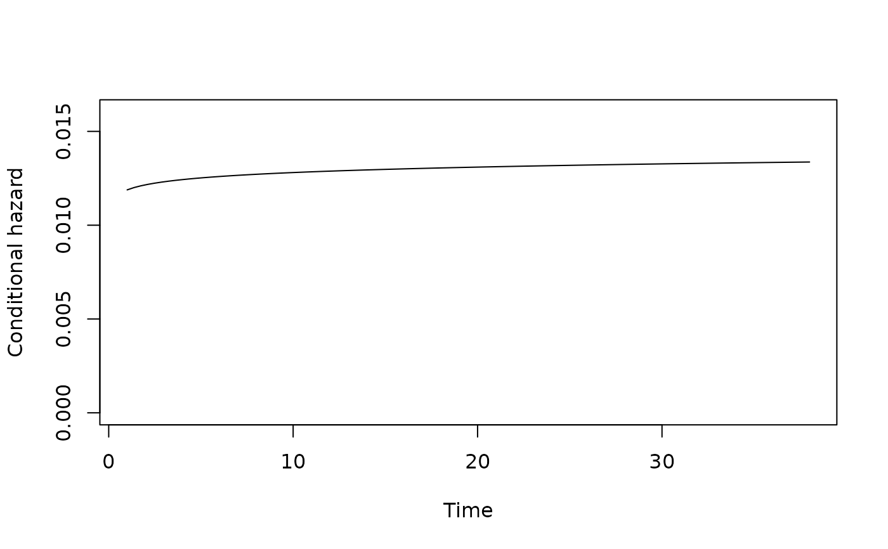
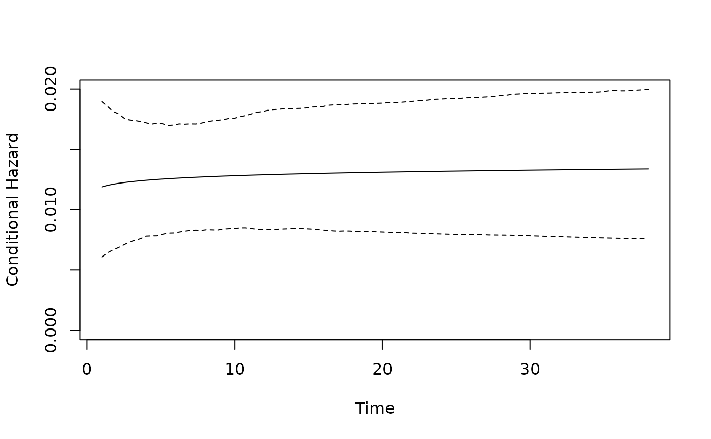

plot_hazard plots the shape of estimated hazard function in respect
to duration, given a set of values for the duration and risk equations
covariates. Confidence intervals are provided through simulation.
plot_hazard(x, t = NULL, ci = TRUE, n = 1000, xvals = NULL, zvals = NULL, ...)
| x | An object of class |
|---|---|
| t | Time values at which to evaluate hazard function, e.g. |
| ci | Compute simulation-based confidence interval? |
| n | Number of simulations to use for CI, defaults to 1,000. |
| xvals | A vector of values for the duration equation variables, in the
same order as the duration equation in |
| zvals | A vector of values for the risk equation variables, in the same
order as the risk equation in |
| ... | Additional parameters passed to |
